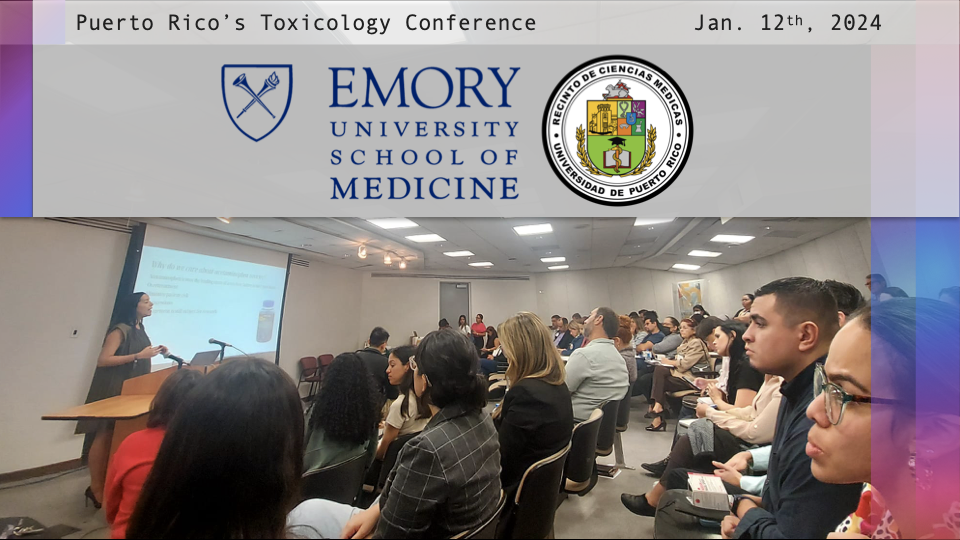
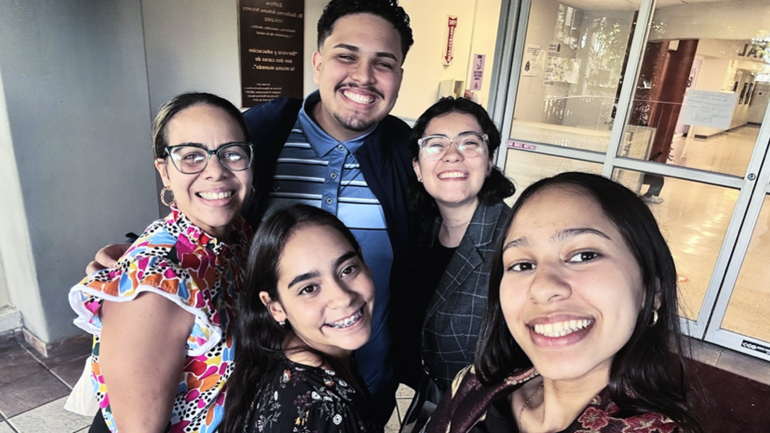
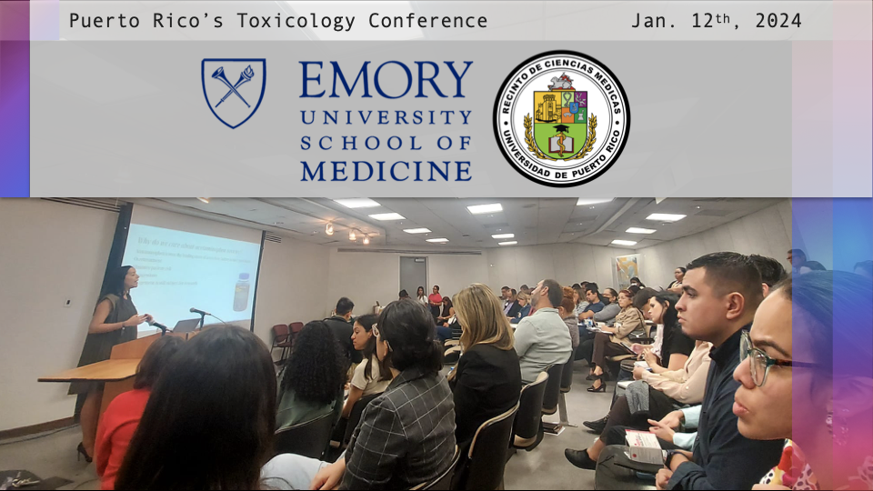
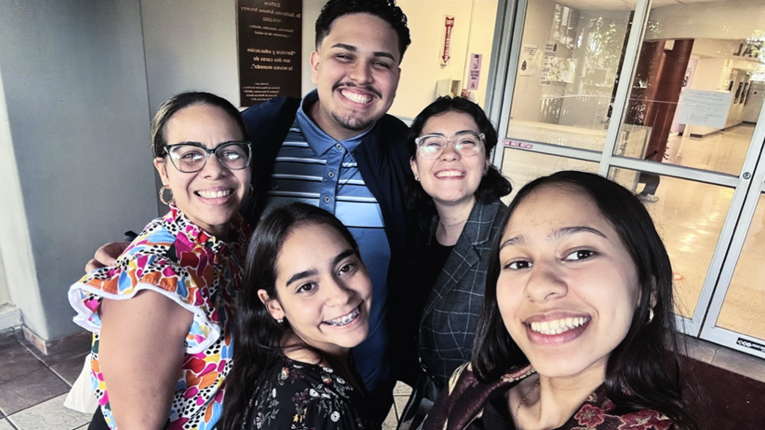

Behind Relief: Exploring the Toxicology of Common Medications
January 28, 2024 - Authored by: Paola N. Aponte-Castro | Sebastián A. Rosario-Torres | Verónica Defilló-Martinez | Osvaldo D. Rivera-González
The medical sciences community of the island was recently enriched by twelve seminars at the Puerto Rico’s Toxicology Conference led by distinguished faculty members and fellows of the Medical Toxicology Program at the Department of Emergency Medicine of Emory University, which shed light on the critical situation related to over-the-counter medications, home remedies, and opioids. Thanks to an invitation from the local ChEMTox Laboratory, the RIVERA-OMICS laboratory had the privilege of participating in the event, gaining new perspectives through the involvement of Sebastián Rosario-Torres and Veronica Defilló-Martinez in three of the twelve seminars imparted. These sessions provided valuable information, emphasizing the complex mechanisms of our body's response to medication ingestion, with a particular focus on the crucial importance of proper dosing, especially for common medications such as aspirin and acetaminophen.
The conference was hosted at the University of Puerto Rico (UPR) Medical Science Campus. Before diving into the details of each seminar that the lab attended, we provide a brief summary highlighting the key topics addressed. First, during Dr. Liz Eneida Rivera-Blanco's conference on acetaminophen toxicity, clinical and physiological aspects were discussed, along with strategies to assess and prevent adverse effects of acetaminophen. The emphasis was placed on the importance of adequate and conscious management of this commonly used medication. Then, Dr. David Kuai shifted focus onto aspirin toxicity, highlighting the relevance of methyl salicylate present in wintergreen oil. Dr. Kuai explained how salicylates affect cellular respiration, leading to respiratory alkalosis and metabolic acidosis. He also emphasized the dose-dependence of the effects of lower pH and the need to prevent acidosis in aspirin toxicity. Finally, Dr. Emily Kiernan addressed cardiovascular toxins, highlighting that most medications can be considered toxic to the heart, focusing on common effects on the cardiovascular system, such as rhythm disorders, ischemia, oxidative stress, variations in blood pressure, and heart failure.

Photo: Dr. Rivera-Blanco presenting her seminar at the Puerto Rico Toxicology Conference in the premises of the University of Puerto Rico (UPR) Medical Science Campus.
Dr. Rivera-Blanco, responsible for the seminar titled "Acetaminophen toxicity: guidelines updates", originally attained her undergraduate degree from UPR Cayey, then continuing on her medical education in Guadalajara, Mexico, before being accepted into the emergency medical program at San Lucas at the Ponce School of Medicine. Her journey culminated in graduation in 2022, after which she embarked on a Toxicology Fellowship at Emory University, currently in her second year. This event marks her return to Puerto Rico, contributing her growing expertise to the local medical community. According to Dr. Rivera-Blanco, addressing acetaminophen toxicity is crucial due to its significant impact on public health. This medication has been identified as the leading cause of acute liver failure in the United States, a concerning fact supported by approximately 80,000 calls received by poison centers in 2021 related to both acetaminophen and combinations of medications, including opioids. A critical aspect highlighted by Dr. Rivera-Blanco is the lack of awareness among patients regarding recommended doses and associated risks, often underestimating the dangers of over-the-counter medications. Her call for education as a tool to minimize these risks focuses on avoiding both underuse and overuse of treatment, advocating for a deeper understanding of over-the-counter medication instructions. Furthermore, she underscores concerns about medication combinations, such as the co-administration of opioids with acetaminophen, emphasizing the importance of considering these practices in toxicity assessment.
Regarding the pharmacology of acetaminophen, Dr. Rivera-Blanco explains that despite being an effective antipyretic and analgesic, it lacks anti-inflammatory properties. This phenomenon has a pharmacological basis in its ability to inhibit the production of prostaglandins H2. Additionally, in terms of its pathophysiology, she highlights that its metabolism primarily occurs in the liver, and when systems become saturated, there is an overproduction of N-acetyl-p-benzoquinone imine, a toxic byproduct. Determining acetaminophen-induced hepatotoxicity is done by monitoring liver enzymes ALT and AST, with levels exceeding 1,000 IU/L indicative of significant liver damage. The inclusion of Aspartate transaminase (AST) as an additional marker reinforces the assessment of possible liver damage, liver diseases, or muscle damage.
During the next seminar of interest focused on aspirin toxicity, and was led by Dr. David Kuai, an emergency medicine physician currently completing a medical toxicology fellowship at Emory University in conjunction with the Centers for Disease Control and Prevention (CDC). In his presentation, Dr. Kuai highlighted the relevance of methyl salicylate, the methyl ester of salicylic acid, known for its presence in wintergreen oil. This oil contains a substantial amount of aspirin (7,000 mg in 5 mL). Dr. Kuai explained how salicylates affect cellular respiration, uncoupling oxidative phosphorylation and causing simultaneous respiratory alkalosis and metabolic acidosis. Over time, salicylates enter cells, affecting mitochondria and converting metabolic acidosis into the primary acid-base abnormality. In normal therapeutic dosages, the low-dose pathway predominates, mainly converting aspirin into salicylic acid, easily eliminated. However, in cases of overdose or prolonged exposure to high doses, the high-dose pathway is activated, increasing the production of toxic metabolites. The concept of lower pH with aspirin refers to the acidic environment created when acetylsalicylic acid dissolves in solution. The effects of lower pH affect the permeability of cell membranes, altering normal structure and function. This change could have implications for cellular function. It is crucial to note that the effects of lower pH due to aspirin are dose-dependent. Therapeutic doses are generally well-tolerated, but higher doses, especially in the context of an overdose, can have more pronounced effects on pH and potentially result in systemic toxicity. Preventing acidosis in aspirin toxicity is crucial, and sodium bicarbonate acts as a buffer, neutralizing excess acid in the blood.
After concluding the fourth conference, Dr. Emily Kiernan, a Assistant Professor in the Department of Emergency Medicine of Emory University, addressed the impact of most medications and how they can be considered toxic to the heart. She focused on common effects that these agents can have on the cardiovascular system, including rhythm disorders, ischemia, oxidative stress, variations in blood pressure, and heart failure. During the presentation, treatment modalities adapted to the specific toxin, its mechanism of action, and observed effects were discussed. Therapeutic approaches such as beta-blockers and channel blockers (Na+, Ca2+, K+) were highlighted.

Photo: Group picture of members of the RIVERA-OMICS lab (Sebastián A. Rosario-Torres & Verónica Defilló Martinez) with the ChEMTox Laboratory (Karoline Rios-Rodriguez, Alondra Alfonso-Sevilla & Mayra Luciano-Torres)
In summary, despite the laboratory having only two representatives who could not attend the remaining conferences, the event proved to be revealing about the critical situation of over-the-counter medications and the associated risks to the heart. This activity marks a promising beginning for the laboratory, providing valuable knowledge and opening opportunities that all members are eager to capitalize on in the near future. Furthermore, it served as an excellent opportunity to build connections with distinguished members of Emory University, with whom we wish to maintain continuous communication and explore possible joint projects in the fields of medical toxicology and pharmacogenomics.
The conference was hosted at the University of Puerto Rico (UPR) Medical Science Campus. Before diving into the details of each seminar that the lab attended, we provide a brief summary highlighting the key topics addressed. First, during Dr. Liz Eneida Rivera-Blanco's conference on acetaminophen toxicity, clinical and physiological aspects were discussed, along with strategies to assess and prevent adverse effects of acetaminophen. The emphasis was placed on the importance of adequate and conscious management of this commonly used medication. Then, Dr. David Kuai shifted focus onto aspirin toxicity, highlighting the relevance of methyl salicylate present in wintergreen oil. Dr. Kuai explained how salicylates affect cellular respiration, leading to respiratory alkalosis and metabolic acidosis. He also emphasized the dose-dependence of the effects of lower pH and the need to prevent acidosis in aspirin toxicity. Finally, Dr. Emily Kiernan addressed cardiovascular toxins, highlighting that most medications can be considered toxic to the heart, focusing on common effects on the cardiovascular system, such as rhythm disorders, ischemia, oxidative stress, variations in blood pressure, and heart failure.

Photo: Dr. Rivera-Blanco presenting her seminar at the Puerto Rico Toxicology Conference in the premises of the University of Puerto Rico (UPR) Medical Science Campus.
Dr. Rivera-Blanco, responsible for the seminar titled "Acetaminophen toxicity: guidelines updates", originally attained her undergraduate degree from UPR Cayey, then continuing on her medical education in Guadalajara, Mexico, before being accepted into the emergency medical program at San Lucas at the Ponce School of Medicine. Her journey culminated in graduation in 2022, after which she embarked on a Toxicology Fellowship at Emory University, currently in her second year. This event marks her return to Puerto Rico, contributing her growing expertise to the local medical community. According to Dr. Rivera-Blanco, addressing acetaminophen toxicity is crucial due to its significant impact on public health. This medication has been identified as the leading cause of acute liver failure in the United States, a concerning fact supported by approximately 80,000 calls received by poison centers in 2021 related to both acetaminophen and combinations of medications, including opioids. A critical aspect highlighted by Dr. Rivera-Blanco is the lack of awareness among patients regarding recommended doses and associated risks, often underestimating the dangers of over-the-counter medications. Her call for education as a tool to minimize these risks focuses on avoiding both underuse and overuse of treatment, advocating for a deeper understanding of over-the-counter medication instructions. Furthermore, she underscores concerns about medication combinations, such as the co-administration of opioids with acetaminophen, emphasizing the importance of considering these practices in toxicity assessment.
Regarding the pharmacology of acetaminophen, Dr. Rivera-Blanco explains that despite being an effective antipyretic and analgesic, it lacks anti-inflammatory properties. This phenomenon has a pharmacological basis in its ability to inhibit the production of prostaglandins H2. Additionally, in terms of its pathophysiology, she highlights that its metabolism primarily occurs in the liver, and when systems become saturated, there is an overproduction of N-acetyl-p-benzoquinone imine, a toxic byproduct. Determining acetaminophen-induced hepatotoxicity is done by monitoring liver enzymes ALT and AST, with levels exceeding 1,000 IU/L indicative of significant liver damage. The inclusion of Aspartate transaminase (AST) as an additional marker reinforces the assessment of possible liver damage, liver diseases, or muscle damage.
During the next seminar of interest focused on aspirin toxicity, and was led by Dr. David Kuai, an emergency medicine physician currently completing a medical toxicology fellowship at Emory University in conjunction with the Centers for Disease Control and Prevention (CDC). In his presentation, Dr. Kuai highlighted the relevance of methyl salicylate, the methyl ester of salicylic acid, known for its presence in wintergreen oil. This oil contains a substantial amount of aspirin (7,000 mg in 5 mL). Dr. Kuai explained how salicylates affect cellular respiration, uncoupling oxidative phosphorylation and causing simultaneous respiratory alkalosis and metabolic acidosis. Over time, salicylates enter cells, affecting mitochondria and converting metabolic acidosis into the primary acid-base abnormality. In normal therapeutic dosages, the low-dose pathway predominates, mainly converting aspirin into salicylic acid, easily eliminated. However, in cases of overdose or prolonged exposure to high doses, the high-dose pathway is activated, increasing the production of toxic metabolites. The concept of lower pH with aspirin refers to the acidic environment created when acetylsalicylic acid dissolves in solution. The effects of lower pH affect the permeability of cell membranes, altering normal structure and function. This change could have implications for cellular function. It is crucial to note that the effects of lower pH due to aspirin are dose-dependent. Therapeutic doses are generally well-tolerated, but higher doses, especially in the context of an overdose, can have more pronounced effects on pH and potentially result in systemic toxicity. Preventing acidosis in aspirin toxicity is crucial, and sodium bicarbonate acts as a buffer, neutralizing excess acid in the blood.
After concluding the fourth conference, Dr. Emily Kiernan, a Assistant Professor in the Department of Emergency Medicine of Emory University, addressed the impact of most medications and how they can be considered toxic to the heart. She focused on common effects that these agents can have on the cardiovascular system, including rhythm disorders, ischemia, oxidative stress, variations in blood pressure, and heart failure. During the presentation, treatment modalities adapted to the specific toxin, its mechanism of action, and observed effects were discussed. Therapeutic approaches such as beta-blockers and channel blockers (Na+, Ca2+, K+) were highlighted.

Photo: Group picture of members of the RIVERA-OMICS lab (Sebastián A. Rosario-Torres & Verónica Defilló Martinez) with the ChEMTox Laboratory (Karoline Rios-Rodriguez, Alondra Alfonso-Sevilla & Mayra Luciano-Torres)
In summary, despite the laboratory having only two representatives who could not attend the remaining conferences, the event proved to be revealing about the critical situation of over-the-counter medications and the associated risks to the heart. This activity marks a promising beginning for the laboratory, providing valuable knowledge and opening opportunities that all members are eager to capitalize on in the near future. Furthermore, it served as an excellent opportunity to build connections with distinguished members of Emory University, with whom we wish to maintain continuous communication and explore possible joint projects in the fields of medical toxicology and pharmacogenomics.
The RIVERA-OMICS laboratory enjoyed the attended seminars of the conference and is enthusiastic about participating in future activities led by the Emory University scientific community.
Authored by:


About RIVERA-OMICS:
OMICS (Omics Molecular Innovations and Commercialization Strategies), is an entity built to develop omics-focused academic research projects and investigate the commercial landscape of novel biotechnologies and biomedicines. OMICS is a branch of RIVERA Initiatives Inc, a non-profit organization that seeks to empower academia through comprehensive resources and collaborative research endeavors to advance educational excellence and innovation.
For inquiries, please contact:
research@riveraomics.org